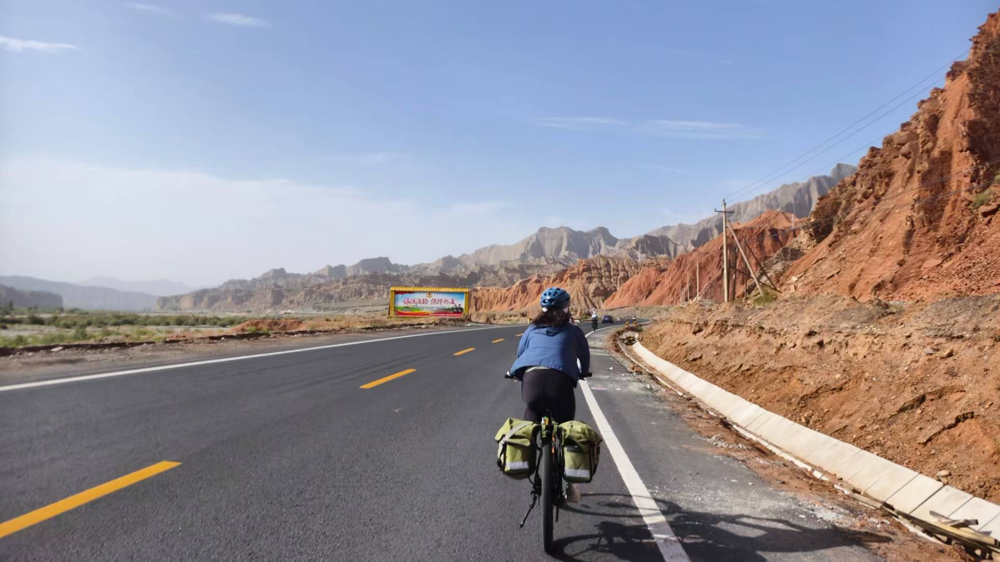
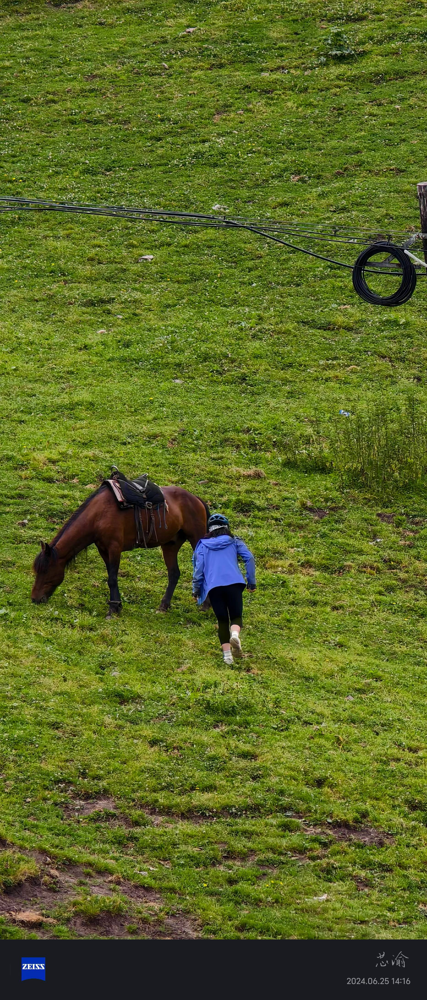
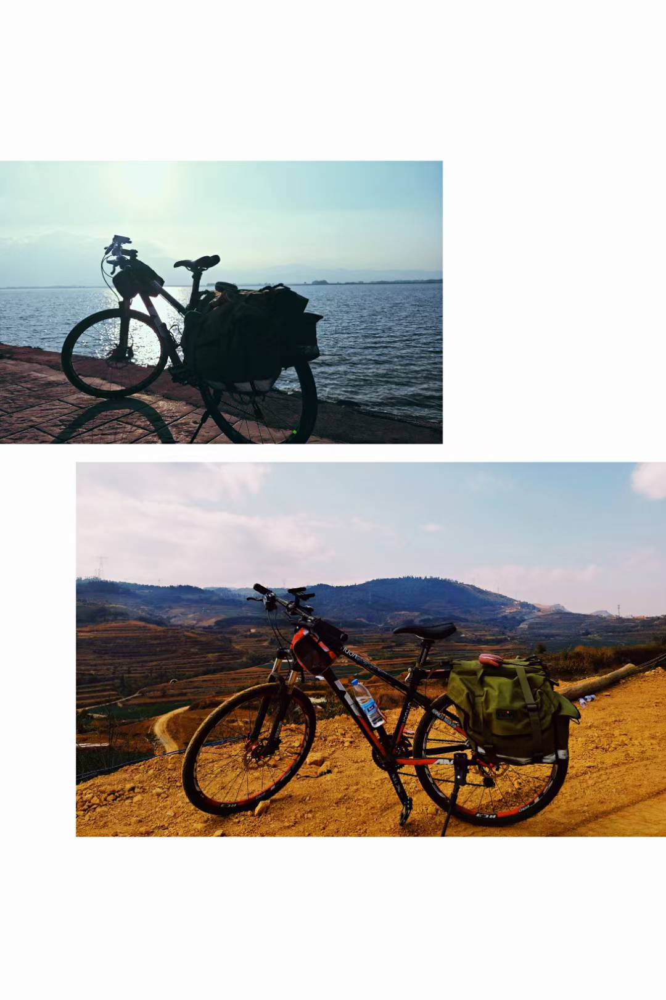
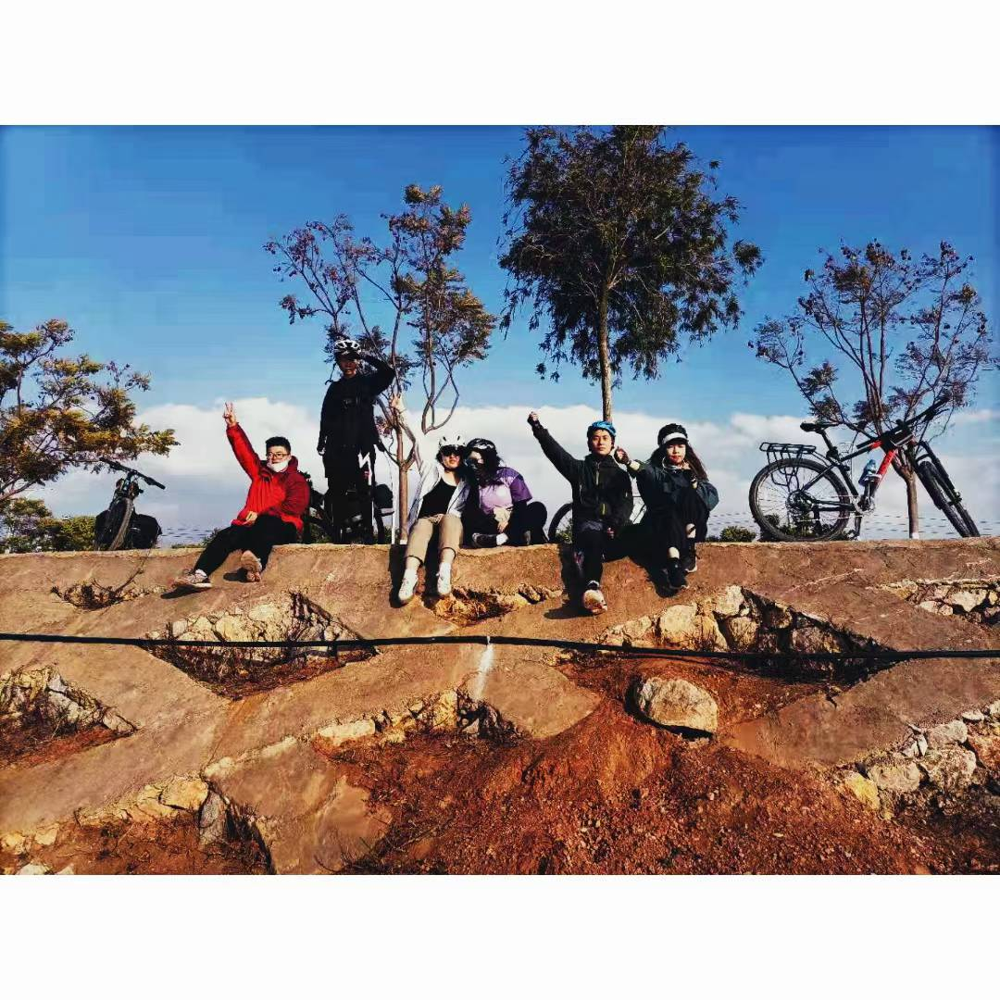
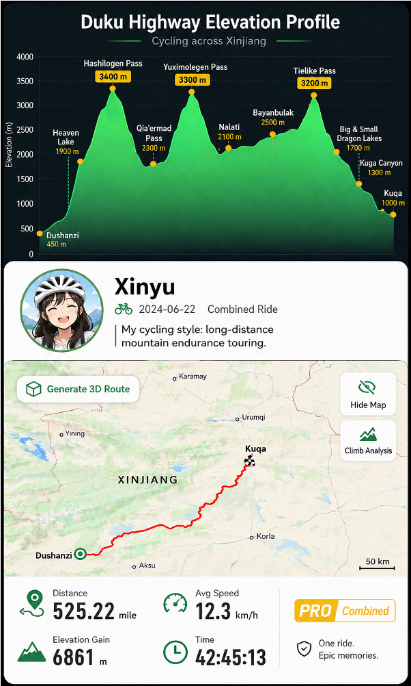

Beyond Academia
Outside academia, I enjoy long-distance cycling.
China, by bicycle
The interactive map is loading. The trip descriptions below are available without a map.
Schematic routes connecting places I visited; not GPS tracks.
Around Hainan Island
An island circuit in southern China.
Kunming to Hekou
Through Yunnan to Hekou, on the Chinese side of the border with Vietnam.
Hohhot to Chengdu
From Hohhot to Chengdu, via Gannan.
Duku Highway
From Dushanzi to Kuqa, across the Tian Shan mountains in Xinjiang.
Wuhan to Enshi
Across Hubei in central China, from Wuhan to Enshi.




